Mobile portrait HUD: compaction and integrity
261019. Ten options from the UI pass, all done. Captures from the Unity Game view at 1080 x 1920 (16:9) and 1080 x 2520 (21:9), plus 1080 x 2400 for the cutout case. The panel is always 1920 units tall, so a taller phone gets a narrower column: 21:9 is the tight case. Numbered pins mark what changed.
1. Every sheet fits every phone, and a test checks it
The column hides overflow (.column { overflow: hidden }), so a sheet taller than the room between the corners used to be cut off without any sign. Now a sheet that reaches the top bar switches to .dense (tighter rows), and HudView.LayoutProblems() lists anything that does not fit: elements outside the column, text wider or taller than its box, a sheet that reaches the top bar or covers the bottom corners, badges on two rows, the top bar on a cutout. HudLayoutTests lays the HUD out for 1080 x 1920, 2340 and 2520 (SimulateScreen) and asserts the list is empty for every menu tab, the intro card, a six-way fight with a wrapping caption, the results sheet, and the puppet with each debug tab. To check the checker, I injected an over-long button and an oversized sheet: it reported both.
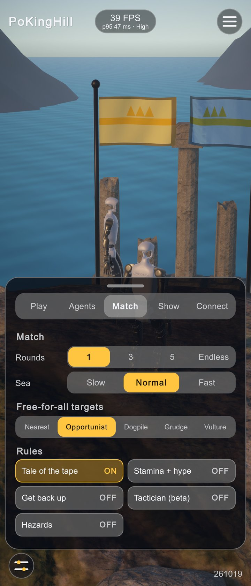
1- "Opportunist" squeezes the other four targeting buttons, and the label does not say what the mode does.
 1
1- Short, equal labels (Opportunist shown as "Weakest") and a one-line hint describing the selected mode.
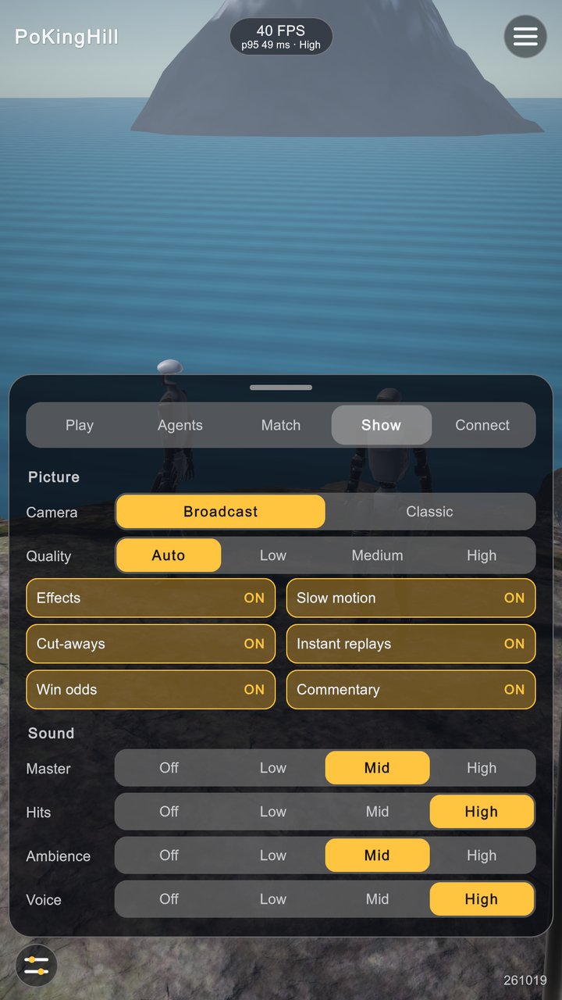
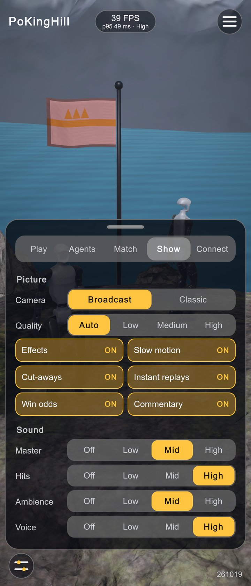
2. Six fighters on one row of badges
Each badge is now a seat-coloured avatar with initials, a wins pip on its corner, a status tag (DOWN, EDGE, HYPE, tactic) on its lower edge, the name cut with an ellipsis, and the vitals strip. Ties moved into the round line. The strip is about 130 units tall instead of about 200.
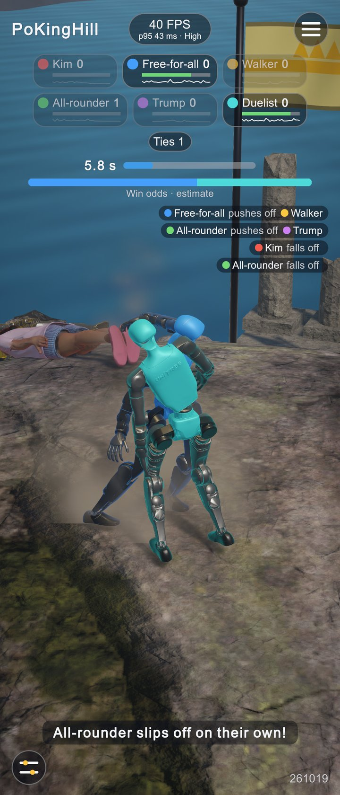
12- Two rows of badges.
- Ties took a third row of its own.
 12
12- One row: initials, wins pip, ellipsised name, vitals.
- Clock, sea bar and ties share one line.
3. Results: names no longer cut off
Units moved to the column headers, the result became a coloured W, L or T, the number columns narrowed (112 to 92 and 64 units), and the Elo change got a coloured badge. The name column grows from about 75 to about 230 units at 21:9.
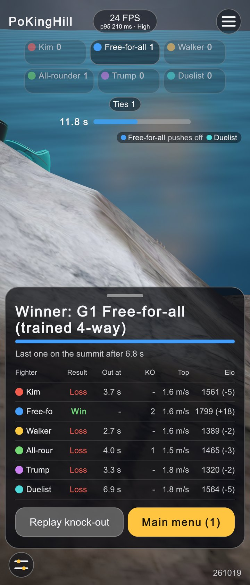
12- "Free-fo", "All-rour": names cut off by the number columns.
- Replay was a button beside the next-round button.
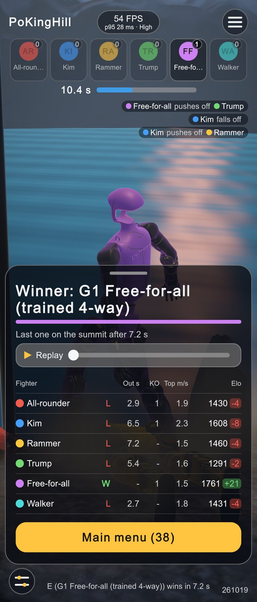
12- Full names, units in the header, coloured Elo change.
- The replay strip under the winner (option 4).
4. Replay merged into the results, with a playhead you can drag
On the results sheet, tapping the replay strip plays the knock-out from the point tapped. During the replay a bar at the bottom shows the playhead: dragging it holds the replay and seeks (ReplaySystem.Seek, Hold), and Skip ends it. It replaces the round line's unstyled Skip button.
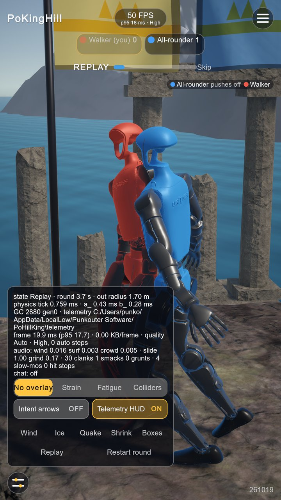
12- "Skip" had no background and sat on the sea bar.
- Debug panel 640 units wide: "No overlay" ran out of its button; hazard and replay buttons had no background either.
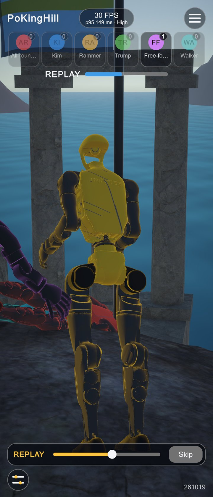
1- Replay bar: label, playhead at 55 % (dragged there), Skip.
5. State flow under random taps, and one race fixed
Race found and fixed: entering the menu (or starting a round) while the knock-out replay played left the replay running. One frame later ReplaySystem.Update saw the state change and restored the end of the round over the menu's fresh placement, so the fallen fighter went back into the sea. The HUD's menu button stopped the replay first, but the director's own paths did not. Now DemoDirector.EnterMenu, StartMatch and NewRound call ReplaySystem.StopActive() before placing anyone. Also fixed: a finger on the stick when a round ended kept steering the next round (the stick is now recentred on every state change), and a knock-out timestamp from before a MuJoCo reset (time back to 0 after a NaN) offered a replay that silently refused to play (Available is now false).
StateFlowSoakTests.RandomTapsNeverStrandTheGame: 300 random actions at random moments (quick match, launch, skip intro, menu, continue, replay play and stop, debug, hide and peek, restart, tab, puppet). After each action and on every frame it checks that the replay flag matches the director, physics runs whenever no replay does, a sheet only shows in Menu or Result, every seated fighter has a badge, and the stick is centred outside a round. The game must never sit in one state for 2 minutes, and the menu must come back clean at the end. MenuDuringReplayKeepsTheMenuPlacement is the regression test for the race.
6. Console health
ConsoleGuard (PlayMode tests) collects every exception, error and assert, plus the UI Toolkit warnings that signal a broken layout or stylesheet (a layout pass that never settles, unknown USS properties or variables, panel settings). The layout, cutout, soak and replay tests all end with guard.AssertClean(). EditMode HudStyleTests checks that every class HudView uses has a rule in Hud.uss.
7. The sheet swipes away and comes back
The grabber was decorative. Now a swipe down (or a tap) on it hides the sheet and leaves a peek pill: "Menu", or "Results · 32" with the countdown. The pill, the menu button (which used to do nothing in the menu) or a swipe up from the bottom edge brings the sheet back. During the intro or a round, a swipe up from the bottom edge opens the menu, as the top-right button does, so the menu no longer needs the hardest corner to reach with a thumb.
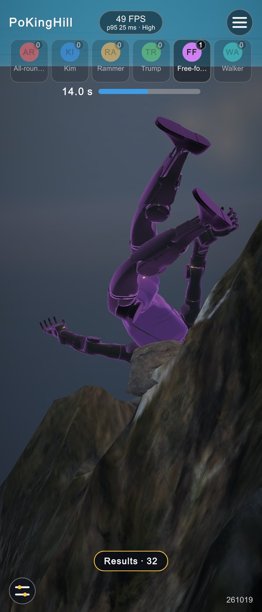
1- Hidden results sheet: the fall stays in view, the pill counts down and brings the sheet back.
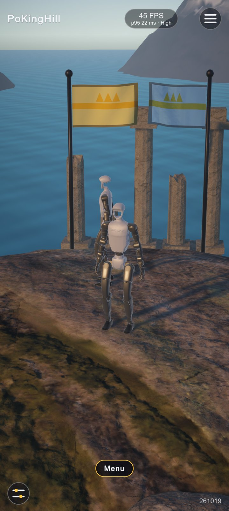
1- Hidden menu: the attract view with only the corners and a "Menu" pill.
8. A stick that comes to the thumb, and a debug panel in tabs
The stick rests bottom-left at half opacity and jumps to wherever a thumb lands in the lower zone. Side steps are stacked on the right edge. The debug panel spans the column, has tabs (Perf, View, Hazards; its buttons sit on proper segment backgrounds) and opens three ways: the bottom-left button, a two-finger tap, or holding the FPS pill for half a second. With the stick on screen it hangs under the live strip instead of covering the stick.
- Everything in one block: timings, overlays, hazards, replay.
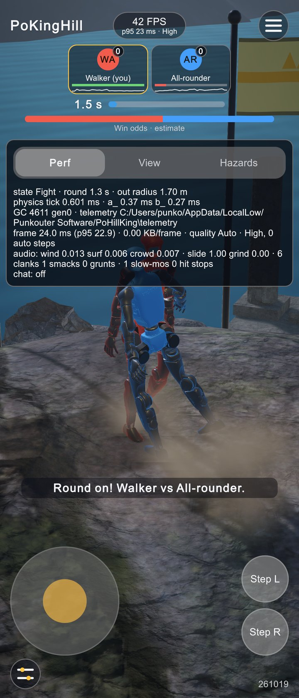
123- Tabs: Perf, View, Hazards.
- Stick at rest; it moves under the thumb.
- Side steps on the right edge.
9. The top bar keeps clear of camera cutouts
Some phones report a full-screen safe area and still have a punch-hole camera in the middle of the top edge, which is exactly where the FPS pill sits. HudView now reads Screen.cutouts: the pill steps aside from a centred hole, and a corner notch pushes the whole top bar down. The safe-area insets now pad the column, so the stylesheet keeps its own padding inside them. TopBarClearsCutouts covers a punch hole, a corner notch, and a phone that reports its notch and home bar (sheet, peek pill and debug panel inside the safe area). The black dot below is drawn where the simulated hole is.
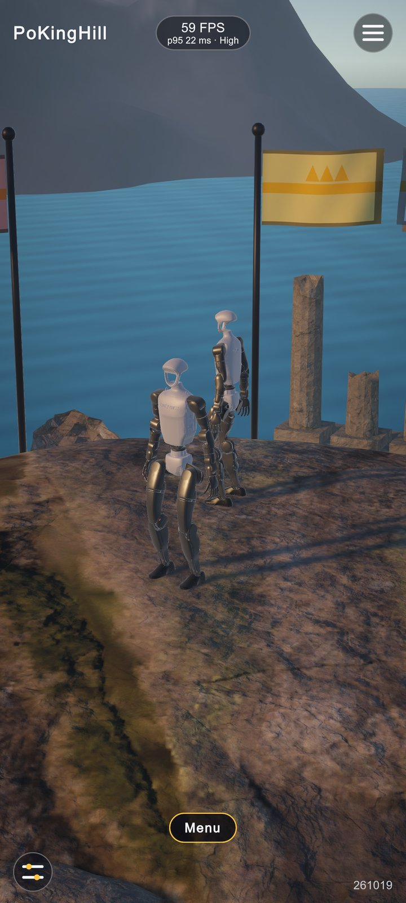
1- The FPS pill sits under the hole.
- The pill steps to the right of the hole, clear of the menu button.
10. One stylesheet, one type scale
Hud.uss defines a six-step type scale (--fs-xs 22 to --fs-xxl 48) and control heights (--h-s to --h-xl) on :root. Every rule uses them, and EditMode HudStyleTests enforces it. The static sizes that HudView set from C# became classes (.row.labeled, .secondary.compact, .grid.spaced, .res-cell.narrow...). Two text-flow fixes came out of the audit: a caption that wraps now keeps its background (it had spilled below it), and the Connect placeholders are short enough to fit on one line.
| Before | After | |
|---|---|---|
| Distinct font sizes in Hud.uss | 16 (22-54 px) | 6 tokens |
| Static style assignments in HudView.cs | 30 | 0 (6 live: column width, safe-area insets, scrub fill) |
| Badge strip height, six fighters | about 200 units, two rows | about 130 units, one row |
| Results name column at 21:9 | about 75 units | about 230 units |
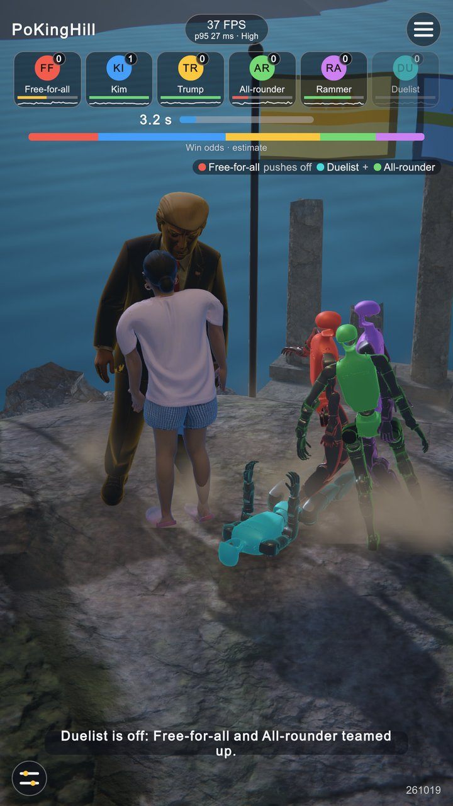
1- Shrink-to-fit caption: the box is measured one line tall, and "up." falls below it. The height check in
LayoutProblemsnow catches this.
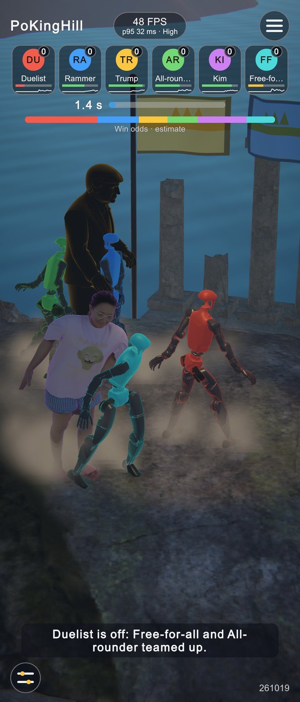
1- The caption stretches across the column, so both lines sit inside the background.
Measured
| Suite | Result |
|---|---|
EditMode (46, including the new HudStyleTests: tokens, no static sizes from C#, every class styled) | 46 / 46 passed |
PlayMode HudLayoutTests: every screen at 16:9, 19.5:9, 21:9; punch hole, corner notch, reported safe area | 2 / 2 passed (13 s, 2 s) |
PlayMode StateFlowSoakTests.RandomTapsNeverStrandTheGame | passed: 230 random actions, 26 returns to the menu, no invariant broken, console clean (210 s) |
PlayMode StateFlowSoakTests.MenuDuringReplayKeepsTheMenuPlacement | passed; with the fix disabled it fails ("entering the menu ends the replay") |
PlayMode MatchFlowTests (3, unchanged) | 3 / 3 passed |
LayoutProblems on the captures shown here | empty for every capture |
Seen during captures, not fixed (physics): during a results pause held for minutes on purpose, the six-way scene went unstable (BADQACC, NaN in qacc at DOF 47, t = 192 s, bodies piled in the sea), and MuJoCo reset mjData. The normal 5 s pause does not reach it, but a long Endless match could. The replay no longer offers a dead strip afterwards; the instability itself belongs to the physics side.